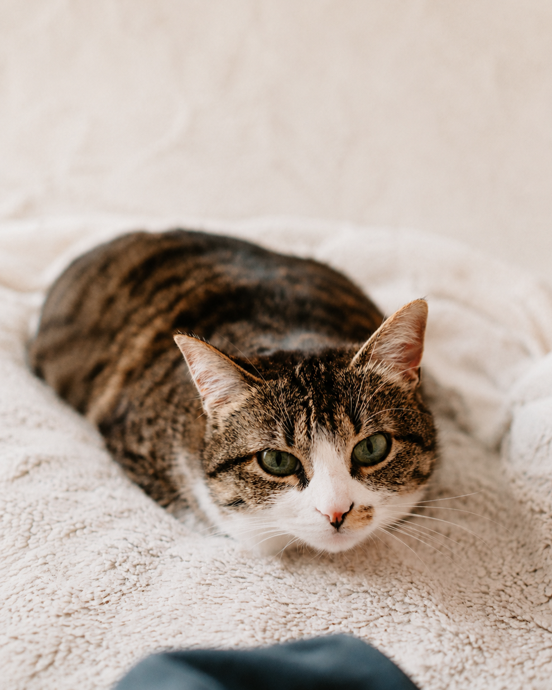
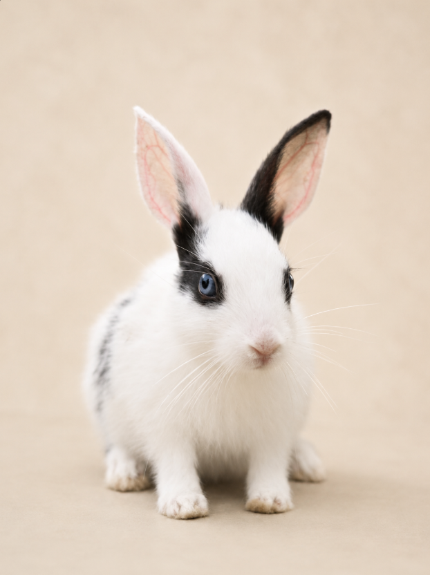
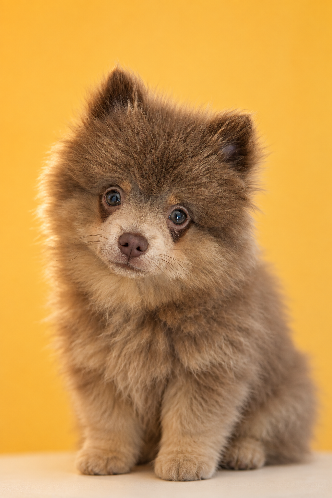
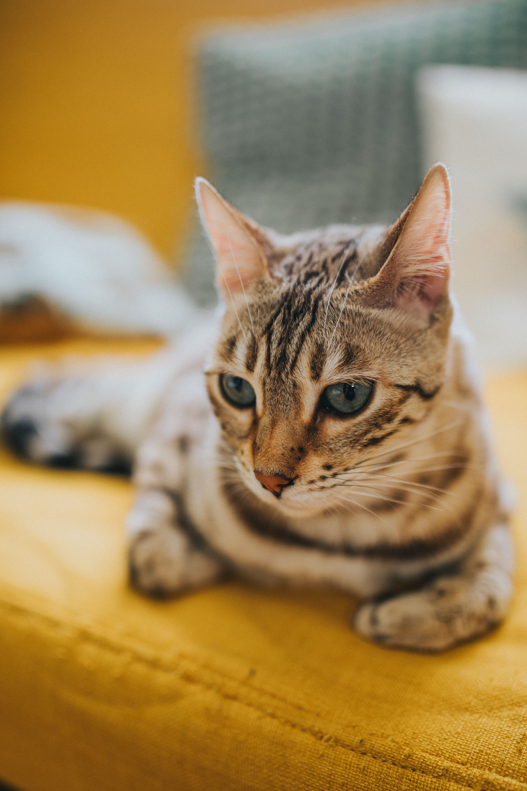
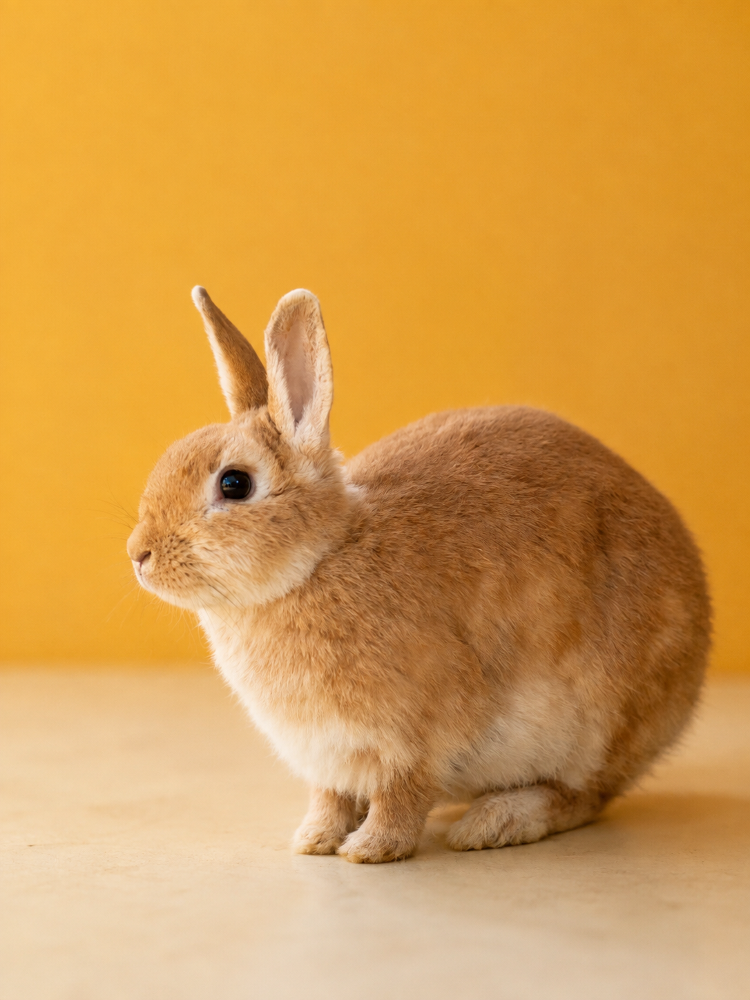

Dog · 3 years
Sunny
Playful, affectionate, and always ready for an adventure.
Meet your match
Every one of our animals has a big personality and an even bigger heart. Start with the kind of companion you’re looking for.
Featured adoptable pets
These profiles are a featured selection of animals currently looking for homes. Our available pets change regularly, so there may be even more friends waiting to meet you.
6 featured friends shown
Playful, affectionate, and always ready for an adventure.

A gentle observer with a fondness for sunny windows.

Curious, soft-natured, and full of charming hops.

Easy-going and happiest close to his people.

A warm cuddle companion with a playful streak.

Calm, sweet, and a fan of fresh greens.
No featured friends match that search yet. Try another name or animal type.
More pets are waiting
These six profiles are only a featured selection. Our adoption team can help you explore other animals currently in care and find a match that fits your home and lifestyle.
Downloadable resources
Save these practical guides for before adoption and the first days at home. Each resource is a downloadable PDF you can keep and refer back to when you need it.
A simple list of home essentials and pickup-day preparations to help you get ready before your new companion arrives.
Download PDFCreate a calmer, safer settling-in space with practical guidance for pet-proofing and preparing everyone in the household.
Download PDFA day-by-day overview for keeping the first week calm, building a routine, and helping your new pet adjust at their own pace.
Download PDFA quick reference for everyday care, enrichment, safety, and the routines that support a healthy home after adoption.
Download PDFEvents & workshops
Join practical sessions and community events created for adopters, foster families, volunteers, and anyone getting ready to welcome a pet.
Spend time with available pets and speak with our adoption team about temperament, routines, and finding the right match.
11:00 AM–3:00 PM · Adoption Centre Ask about this event →Learn how to set up a safe first space, introduce routines, and make the first few days less overwhelming for everyone at home.
1:00 PM–2:30 PM · Learning Room Reserve a spot →Meet the foster team, understand the support provided, and learn what to expect when temporarily caring for a rescue animal.
10:30 AM–12:00 PM · Community Room Register interest →Adoption FAQs
A good match starts with good information. Here are quick answers to some of the questions families ask us most often.
Still have a question? →Start by choosing a pet you would like to meet, then contact our adoption team. We will talk through your home, routine, and what you are looking for before arranging the next step.
Yes. We want the match to feel right for both you and the animal, so a meet-and-greet is an important part of the process.
Bring valid identification and any household information our team requested during your adoption conversation. We will let you know if your chosen pet needs anything additional.
Think about energy level, space, schedule, other pets, and the amount of training or care you can comfortably provide. Our team can help you compare those needs with each animal's personality.
Not sure where to begin?